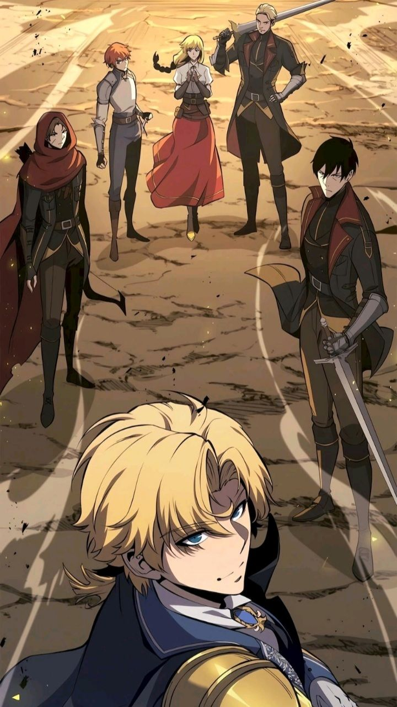

『 Humano 』
Tipo: Humano
Origem e Descrição breve:
Os humanos são a espécie predominante do Continente Mágico. Surgiram na Era do Caos e ganharam notoriedade após a derrota do Deus Maligno por dois de seus heróis, tranzendo consigo a Era dos Humanos
Características:
Alta adaptabilidade a diferentes biomas e condições mágicas.
Crescimento populacional acelerado em comparação às demais espécies.
Forte capacidade de organização social e política.
Tendência à expansão territorial e consolidação de poder.
Habilidades Intrínsecas:
Nenhuma.
Cultura:
Extremamente diversa, variando entre reinos militaristas, teocracias devotas aos Heróis Imortais e nações comerciais expansionistas. Valorizam progresso, legado e linhagem. A história da derrota do Deus Maligno é ensinada como símbolo máximo do potencial humano.
Observações:
São a maioria populacional do continente.
Atualmente detêm a maior parte das rotas comerciais e centros acadêmicos.
Outras espécies os veem com respeito, cautela ou ressentimento.
Apesar da ausência de habilidades intrínsecas, sua capacidade de evolução constante os torna imprevisíveis a longo prazo.
